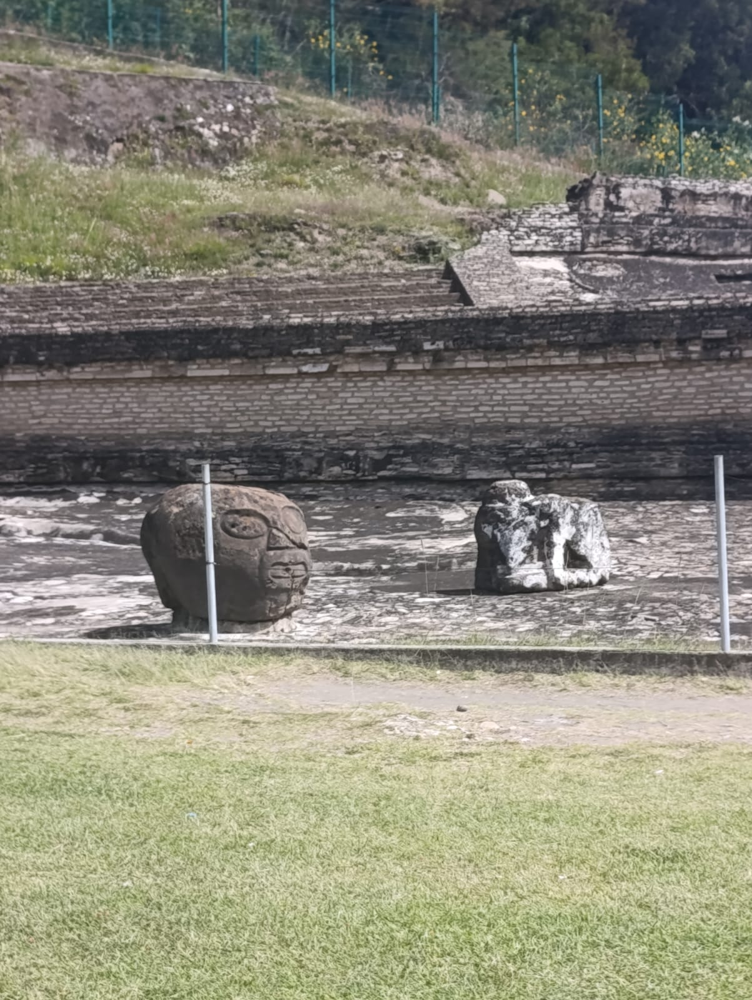

Archivo 01 · Puebla
Guía turística digital / 2026
Descubriendo
Cholula
Zona arqueológica · patrimonio vivo · conservación
“Conocer el patrimonio es el primer paso para protegerlo.”
02 Estación del recorrido
Zona arqueológica
Tlachihualtépetl

LugarHistoriaCultura
El cerro hecho a mano
Tlachihualtépetl se interpreta como “cerro artificial” o “cerro hecho a mano”. La pirámide fue ampliada en distintas etapas. Cholula fue un importante centro ceremonial y de intercambio cuyas raíces se remontan a la época prehispánica.
Características
Patios ceremoniales, altares, escalones y túneles.
Importancia cultural
Guarda la memoria de una ciudad de intercambio y ritual.
Dato interesante
Es reconocida por tener una de las bases más grandes del mundo.
Conservación: no tocar ni escalar fuera de las rutas permitidas ayuda a proteger los muros y superficies antiguas.
03 Evidencia de campo
Lo que vi
lo aprendí

Piezas líticas observadas durante la visita. No les asigno un nombre sin verificar su cédula.

Una cubierta moderna protege parte del patrimonio.
Experiencia sonora
Al dar palmadas, el espacio amplifica la vibración y produce un efecto que puede parecer un sonido parecido al de un pato. La explicación de por qué ocurre pertenece al sonido y la forma del recinto.
07 · Conclusión
Cholula no es
solo una pirámide
Es una historia viva que merece ser conocida, verificada y cuidada.
Mario Mora Valdez